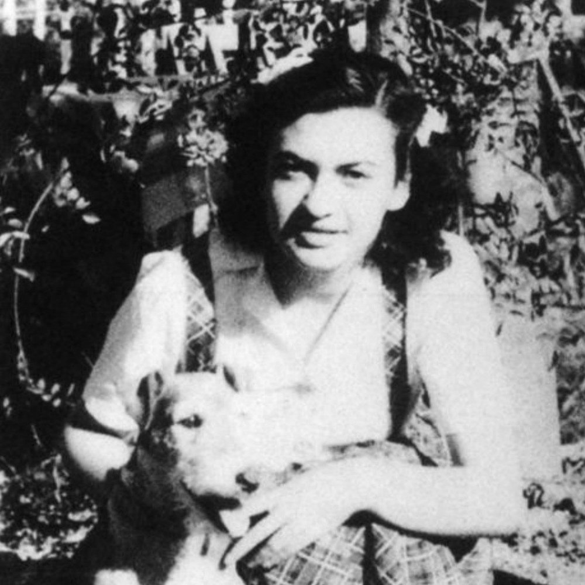

Portrait d’archive
Charlotte Fass (S) [Wardi]
Charlotte FASS épouse Wardi
Nom : FASS
Prénom(s) : Charlotte
Date naissance : 21/09/1928
Âge (ans) : 16
Lieu naissance : Cologne (Köln)
Pays ou département : Allemagne
Lieu rassemblement : Lyon
Dernière adresse : 64, Route de Rochemaure
Ville : Montélimar (Drôme)
Code postal : 26200
N° Convoi : 78
Date déportation : 11/08/1944
Informations diverses : Née en Allemagne, c’est âgée de cinq mois qu’elle est arrivée en France avec ses parents. Elle étudie à l’École Sophie Germain à Lille. Avec l’Occupation, au début de la Deuxième Guerre mondiale, elle quitte Lille avec les siens pour se réfugier en zone libre. Avec l’invasion de la zone libre par les Allemands, le 11 novembre 1942, elle est réfugiée à Montélimar et fréquente le Collège de Jeunes Filles. Arrêtée le 21/07/1944 avec sa mère Fanny Feigel Fass (née Silbiger, 08/10/1894 à Wisznice, Pologne) et son oncle David Silbiger (01/01/1896, Oświęcim, Małopolska, Pologne) à leur domicile à Montélimar par la Milice et la Gestapo. Internée à la prison Montluc (cellule 10) à Lyon, elle sera directement déportée à Auschwitz-Birkenau le 18/8/1944 par le convoi n°78. Elle arrive à Auschwitz le 26/08/1944. L’Armée rouge la libère avec ses camarades de déportation. Elle est la seule survivante de sa famille.
Elle témoignera un mois après son retour de déportation, dans un Procès verbal le 09/08/1945 (ci-dessous) pour le Mémorial de l’Oppression et de recherche de crime de guerre. Elle y précise qu’à son arrivée à Auschwitz le 26/08/1944, sur 130 femmes, 85 furent sélectionnées pour la chambre à gaz. Sa mère et son oncle sont gazés à leur arrivée. Charlotte fait partie des 45 femmes sélectionnées pour le travail. Le 27/11/1944 elle est transférée au camp de Kratzau (Sudètes) où elle travaille dans une usine d’armement. Elle est libérée le 11 mai 1945 et rentre en France le 29/06/1945.
Elle sera naturalisée française le 18/03/1949. Elle reprend des études au lycée Fénelon de Lille, puis étudie les Lettres à la Sorbonne à Paris et passe une thèse de doctorat dont le titre est : Le Juif dans le roman français, 1933–1948. Charlotte émigra en Israël en 1949. Elle fut professeure de littérature française en 1956 au Lycée Edmond de Rothschild A.I.U. et à l’Université de Haïfa ainsi qu’inspectrice de l’éducation nationale pour l’instruction en français. Elle fut témoin au procès Barbie à Lyon en 1987. Elle est décédée le 10/12/2018 en Israël (Source: Hommage à Charlotte WARDI (1928-2018); The Shalvi/Hyman Encyclopedia of Jewish Women).
Fass, née Silbiger (Feigel) le 18 octobre 1894 à Wisznice (Pologne), décédée le 16 août 1944 à Auschwitz (Pologne).
Lieu de déportation : Auschwitz
Lieu de départ : Lyon
Nombre total de déporté·e·s du convoi : 430
Gazé·e·s à l'arrivée : 128 (29,8 %)
Survivant·e·s en 1945 : 36 (8,4 %)